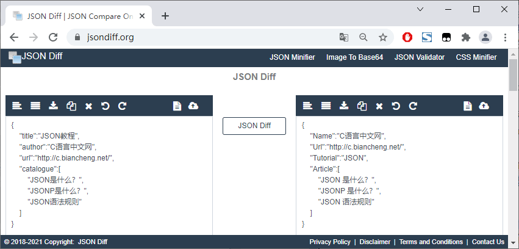
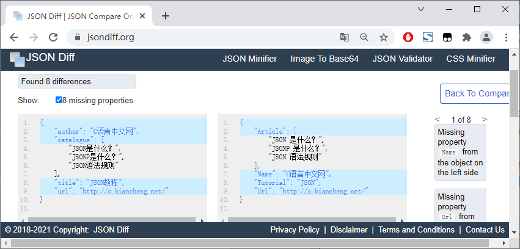
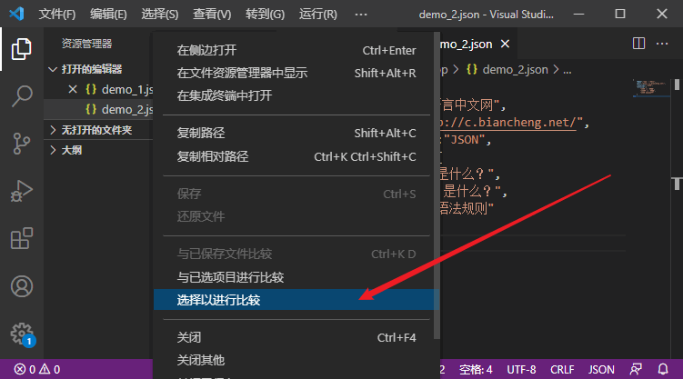
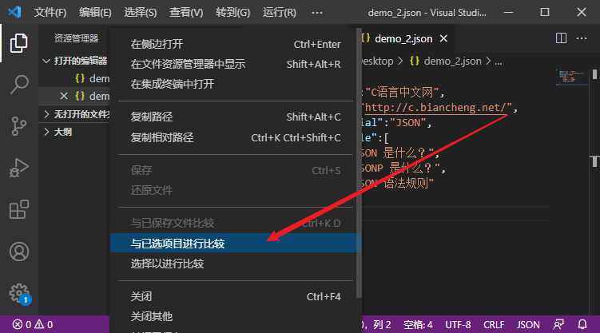
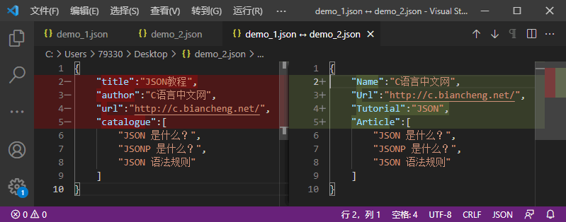
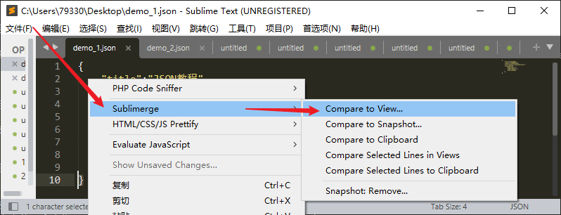
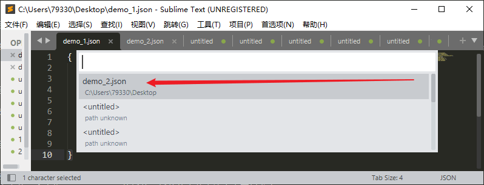
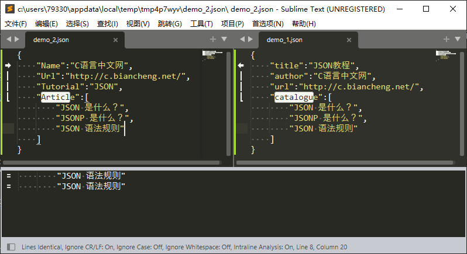

JSON对比工具
JSON 是 Web 开发领域中最常用的数据传输格式之一，因为 JSON 的可读性较高，对于一些简单的 JSON 数据，我们不需要借助任何工具就可以轻易的读取。但对于复杂的 JSON 数据就需要借助工具才行，本节我们来介绍一些 JSON 对比工具。
要对比 JSON 数据，最简单的方法就是借助在线工具，在线工具即不需要安装，也不需要配置环境就可以拿来使用，在网络中可以找到许多优秀的 JSON 在线对比工具，如下所示：
以 https://jsondiff.org/ 为例，要对比两个 JSON 数据，具体操作如下图所示：
对比结果如下图所示：
除了在线工具外，我们也可以通过代码编辑器来对比 JSON 数据，例如 Visual Studio Code（简称“VS Code”）中就内置了文件对比工具，具体操作如下：
首先，选中第一个要对比的文件，点击鼠标右键，在弹出的菜单中选择“选择以进行比较”或“Select for Compare”，如下图所示：
然后，选中第二个要对比的文件，点击鼠标右键，在弹出的菜单中选择“与已选项目进行比较”或“Compare with Selected”，如下图所示：
对比结果如下图所示：
除了 VS Code 外，使用 Sublime Text 编辑器也可以进行文件对比，但是需要在 Sublime Text 中安装一个名为“Sublimerge”的插件，插件的安装方法大家可以参考 https://www.cnblogs.com/superjishere/p/11624668.html。插件安装完成后就可以进行文件对比了，具体操作如下：
首先，在第一个要对比的文件中单击鼠标右键，在弹出的菜单中选择“Sublimerge”→“Compare to View”，如下图所示：
然后，在弹出的菜单中选择第二个要对比的文件，如下图所示：
对比结果如下图所示：
要对比 JSON 数据，最简单的方法就是借助在线工具，在线工具即不需要安装，也不需要配置环境就可以拿来使用，在网络中可以找到许多优秀的 JSON 在线对比工具，如下所示：
- https://jsoncompare.org/
- https://jsoncompare.com/#!/diff/
- https://jsondiff.org/
- http://jsondiff.com/
- http://www.jsondiff.com/
- https://extendsclass.com/json-diff.html
- https://www.textcompare.org/json/
- https://jsoncompare.org/
- https://alldiff.in/
- https://bestjsonformatter.com/json-diff/
- https://www.jsonformatting.com/json-compare/
- https://url-decode.com/tool/json-diff/
- https://www.sojson.com/jsondiff.html
- https://www.json.cn/
- http://json365.com/json_compare
- https://jsonlint.com/
以 https://jsondiff.org/ 为例，要对比两个 JSON 数据，具体操作如下图所示：

图：对比两个 JSON 数据
图：对比两个 JSON 数据
对比结果如下图所示：

图：JSON 数据对比结果
图：JSON 数据对比结果
除了在线工具外，我们也可以通过代码编辑器来对比 JSON 数据，例如 Visual Studio Code（简称“VS Code”）中就内置了文件对比工具，具体操作如下：
首先，选中第一个要对比的文件，点击鼠标右键，在弹出的菜单中选择“选择以进行比较”或“Select for Compare”，如下图所示：

图：选择第一个要对比的文件
图：选择第一个要对比的文件
然后，选中第二个要对比的文件，点击鼠标右键，在弹出的菜单中选择“与已选项目进行比较”或“Compare with Selected”，如下图所示：

图：选择第二个要对比的文件
图：选择第二个要对比的文件
对比结果如下图所示：

图：对比两个 json 文件
图：对比两个 json 文件
除了 VS Code 外，使用 Sublime Text 编辑器也可以进行文件对比，但是需要在 Sublime Text 中安装一个名为“Sublimerge”的插件，插件的安装方法大家可以参考 https://www.cnblogs.com/superjishere/p/11624668.html。插件安装完成后就可以进行文件对比了，具体操作如下：
首先，在第一个要对比的文件中单击鼠标右键，在弹出的菜单中选择“Sublimerge”→“Compare to View”，如下图所示：

图：第一个要对比的文件
图：第一个要对比的文件
然后，在弹出的菜单中选择第二个要对比的文件，如下图所示：

图：第二个要对比的文件
图：第二个要对比的文件
对比结果如下图所示：

图：对比两个 json 文件
图：对比两个 json 文件
关注公众号「站长严长生」，在手机上阅读所有教程，随时随地都能学习。内含一款搜索神器，免费下载全网书籍和视频。

微信扫码关注公众号